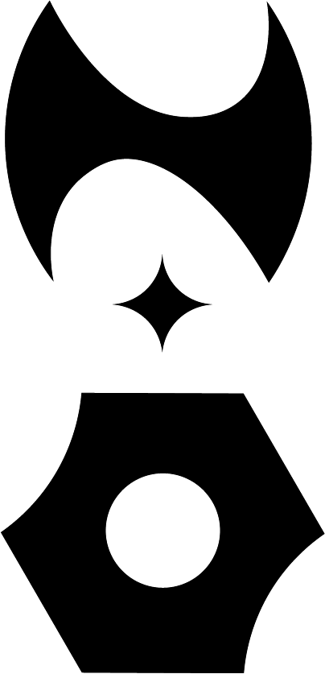

ABOUT
The New Order gives light to high-end fashion pieces that are still alive by today and craving to be owned. This platform is founded with the purpose to highlight sustainable vintage shops that are in scarce category.
From timeless designer pieces like, Burberry, Chanel and Louis Vuitton the collections ranges to Maison Margiela, Thierry Mugler and Issey Miyake.
